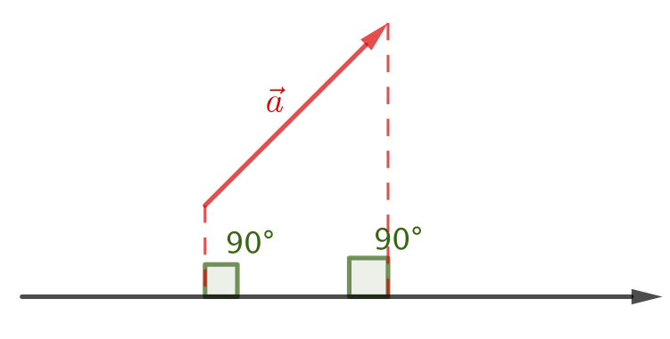
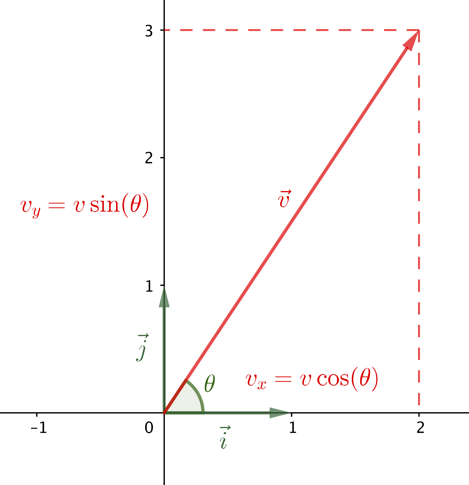

La mécanique, l’étude du mouvement des objets et des objets à l’origine de ce mouvement s’appuie sur le formalisme vectoriel. Il est donc nécessaire de bien le maîtriser afin de pouvoir se concentrer sur la physique.
Vecteurs
Vecteur
Un vecteur est un objet mathématique qui possède trois caractéristiques :
- une direction ;
- un sens ;
- une norme (ou longueur).
On peut représenter un vecteur par un segment muni d’une flèche ; la longueur du segment étant égale à la norme du vecteur.
Propriétés des vecteurs
- On peut sommer deux vecteurs. Le résultat est un nouveau vecteur ;
- On peut multiplier un vecteur par un scalaire (nombre). Le résultat est un vecteur.
- Étapes de la construction pour la méthode du parallélogramme
- Étapes de la construction pour la méthode du parallélogramme
Solutions
Vecteurs en physique
En physique, on modélise les grandeurs dont la description nécessite la donnée d’une direction, d’un sens, d’une valeur par un vecteur.
Les grandeurs modélisée étant de différentes natures, quelques adaptations sont nécessaires par rapport à une utilisation des vecteurs purement mathématique :
- Il peut être nécessaire de préciser un point d’application ;
- On ne parle plus de norme ou longueur d’un vecteur mais de valeur car cette dernière est dimensionnée (unités : mètre pour un vecteur position, mètre par seconde pour un vecteur vitesse, newton pour un vecteur force, etc.).
- La représentation d’un vecteur nécessite la définition et l’affichage de l’échelle utilisée.
Un solide indéformable de masse $m = \pu{30 kg}$ est posé, immobile, sur le sol. Une étude rapide montre que ce système est soumis à son poids $\overrightarrow{P}$ et à la réaction du sol $\overrightarrow{R}$.
On rappelle que le poids est modélisé par un vecteur de direction la verticale du lieu, dirigé vers la Terre et de valeur $P = mg$ où l’intensité du champ de pesanteur sera prise égale à $g = \pu{10 N.kg-1}$.
- Représenter le vecteur $\overrightarrow{P}$ sur le schéma, sachant que son point d’application est le centre d’inertie de l’objet $G$. Indiquer l’échelle utilisée.
- L’objet étant immobile dans le référentiel terrestre que l’on peut ici considérer galiléen, la première loi de Newton nous indique qu’il est soumis à un ensemble d’interactions qui se compensent (il est pseudo-isolé). On peut traduire cette affirmation par la relation mathématique suivante : $$\overrightarrow{P} + \overrightarrow{R} = \overrightarrow{0}$$ Déterminer les caractéristiques du vecteur $\overrightarrow{R}$.
- Représenter le vecteur $\overrightarrow{R}$ sur le schéma, sachant que son point d’application est le centre de la surface de contact entre l’objet et le sol.
Réponses
Composantes d’un vecteur
Projection d’un vecteur sur un axe
La projection d’un vecteur sur un axe orienté est une opération au cours de laquelle on cherche à déterminer la longueur algébrique (mesure algébrique) de ce vecteur sur l’axe. Une projection est dite orthogonale si la droite sur laquelle on projette et la direction de projection sont orthogonales.
L’opérateur mathématique permettant de réaliser une projection est le produit scalaire.
Si $\vec{u}$ est un vecteur unitaire de la droite $(x’x)$ sur laquelle on projette orthogonalement le vecteur, la projection orthogonale $a_x$ est :
Composantes d’un vecteur
On appelle composantes (coordonnées) d’un vecteur le doublet (à 2D) ou le triplet (à 3D) de scalaires représentant les valeurs des projections de ce vecteur sur les directions des vecteurs du repère de référence. 
$$ \vec{v} \ \left( \begin{aligned} v_x &= v \cos(\theta) \cr v_y &= v \sin(\theta) \cr \end{aligned} \right) $$
Réponse
Réponse
Réponse
Vecteur vitesse à partir de données expérimentales
Vecteur vitesse
La vitesse, à la date $t$, d’un système, dans un référentiel donné, est définie par $$\vec{v}(t) = \lim_{\Delta t \to 0} \dfrac{\overrightarrow{OM}(t + \Delta t) - \overrightarrow{OM}(t)}{\Delta t} = \dfrac{\mathrm{d} \overrightarrow{OM} }{ \mathrm{dt} }$$ C’est donc un vecteur dont les caractéristiques sont :
- Direction : droite tangente à la trajectoire, à la position du système à la date $t$ ;
- Sens : celui du mouvement ;
- Valeur : $v(t) = \left\Vert \dfrac{\mathrm{d} \overrightarrow{OM} }{ \mathrm{dt} } \right\Vert$.
Lorsque les équations horaires ne sont pas connues — c’est le cas pour tous les enregistrement expérimentaux —, on ne peut pas déterminer la dérivée de la position et on doit se contenter de rechercher un vecteur vitesse approché.
Si on observer l’expression du paragraphe précédent, on se rend compte que la difficulté pour calculer la dérivée dans ce cas de figure est l’impossibilité de passer à la limite : impossible de considérer $\Delta t \to 0$ !
La première idée consiste à écrire $$\vec{v}(t) \approx \dfrac{\overrightarrow{OM}(t + \Delta t) - \overrightarrow{OM}(t)}{\Delta t} $$ soit $$\vec{v}(t_i) \approx \dfrac{\overrightarrow{OM_{i+1}} - \overrightarrow{OM_{i}}}{t_{i+1}-t_{i}} = \dfrac{\overrightarrow{M_iM_{i+1}}}{t_{i+1}-t_{i}} $$
On montre cependant que
Détermination du vecteur vitesse à partir de données expérimentales
La meilleure approximation pour le vecteur vitesse au point $M_i$ à la date $t_i$ est : $$ \vec{v}(M_i) \approx \dfrac{\overrightarrow{M_{i-1}M_{i+1}}}{t_{i+1}-t_{i-1}} $$ Les vecteurs $\vec{v}(M_i)$ et $\overrightarrow{M_{i-1}M_{i+1}}$ sont colinéaires, ils ont même direction et même sens (puisque le coefficient de colinéarité est positif). On peut donc en déduire que : $$ v(M_i) \approx \dfrac{M_{i-1}M_{i+1}}{t_{i+1}-t_{i-1}} $$
On a enregistré la position d’un mobile toutes les $\pu{50 ms}$ sur une table à coussin d’air. Une partie de la trajectoire ainsi obtenue est affichée ci-dessous. L’échelle des longueurs est la suivante (document - réalité) : $\pu{1 cm} \longleftrightarrow \pu{1 cm}$.
- Est-il possible, en utilisant la formule donnée dans le document ci-dessus, de déterminer les vecteurs vitesses $\vec{v}(A_0)$ et $\vec{v}(A_6)$ ? Pourquoi ?
- Calculer les valeurs du vecteur vitesse du mobile aux points $A_1$, $A_3$ et $A_5$.
- Représenter les vecteurs vitesses aux points $A_1$, $A_3$ et $A_5$.
- Le mouvement est-il uniforme ?
On s’intéresse à la variation du vecteur vitesse alors que le mobile se trouve au point $A_2$. On peut définir cette variation de la sorte : $$ \Delta \vec{v}(A_2) = \vec{v}(A_3) - \vec{v}(A_1) $$
- Déterminer les caractéristiques du vecteur « variation du vecteur vitesse » $\Delta \vec{v}(A_2)$ au point $A_2$ et le représenter.
- Même question au point $A_4$.
- Ces deux dernières questions confirment-elles la réponse à la question 4. ?
Solution
On lance horizontalement une pierre dense et de petit volume du haut du viaduc de Millau, en France. La chute est filmée à l’aide d’une caméra. À l’aide d’un logiciel de pointage on obtient les valeurs suivantes pour l’altitude et la distance parcourue horizontalement par l’objet au cours du temps :
| Date (s) | 0 | 1 | 2 | 3 | 4 | 5 | 6 | 7 | 8 |
|---|---|---|---|---|---|---|---|---|---|
| Altitude (m) | 343 | 338 | 323 | 299 | 265 | 220 | 166 | 103 | 29 |
| Distance horizontale parcourue (m) | 0 | 10 | 20 | 30 | 40 | 50 | 60 | 70 | 80 |
On code un programme dans le langage Python afin de pouvoir répondre aux questions suivantes :
- Quelle est la hauteur du parapet du pont de Millau ?
- Avec quelle vitesse la pierre a-t-elle été lancée ?
Une partie du code nécessaire à l’étude de ce mouvement se trouve à cet emplacement
-
Compléter les lignes 47 à 50.
-
Quels arguments (type et signification) la fonction
affichageattend-elle ? Quels sont ceux qui sont obligatoires, optionnels ? -
Quelle instruction permet de réaliser l’affichage $y=f(x)$ ?
-
Retirer le commentaire de la ligne 55 et lancer le programme. Caractériser l’évolution de l’altitude $z$ au cours du temps.
-
Sur le modèle de la question précédente, afficher et caractériser l’évolution de la distance parcourue horizontalement, $x$, au cours du temps.
-
Toujours sur le même modèle (on pourra aussi étudier la ligne 66), afficher la trajectoire $z=f(x)$.
-
Retirer les commentaires des lignes 41 à 44.
-
Compléter la ligne 42. Il s’agit ici d’entrer l’instruction qui permet de calculer une valeur approchée de la vitesse.
-
Détailler l’instruction à la ligne 41.
-
Compléter les lignes 59 et 60, de façon à posséder les listes des valeurs des vitesses $v_x$ et $v_z$ (à l’éxception de la dernière valeur).
-
Retirer les commentaires des lignes 62 et 63 et lancer le programme.
-
Comment évoluent les vitesses $v_x$ et $v_z$ au cours du temps ? Était-ce prévisible ?
-
Retirer le commentaire de la ligne 66. Les vecteurs vitesse affichés présentent-ils bien les caractéristiques annoncées dans la section 4. de ce document ?
Correction
Exercices
Un homme tire une valise reposant sur le sol (horizontal), à vitesse constante et en ligne droite, en tirant sur une corde attachée à cette valise. L’homme exerce une force constante sur la corde de valeur $\pu{300 N}$ ; la corde fait un angle de $\text{20°}$ avec l’horizontale.
- Déterminer les composantes horizontale et verticale de la valeur de la force que l’homme exerce sur la valise.
- Après analyse du problème et utilisation du principe de l’inertie, déterminer le poids de la valise puis en déduire sa masse.
Rappel. $g=\pu{9,81 m.s-2}$.